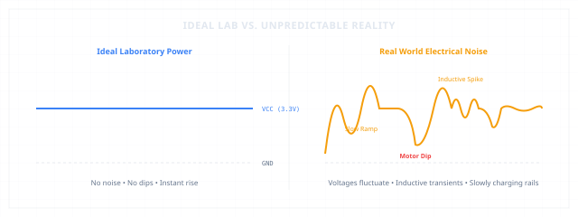
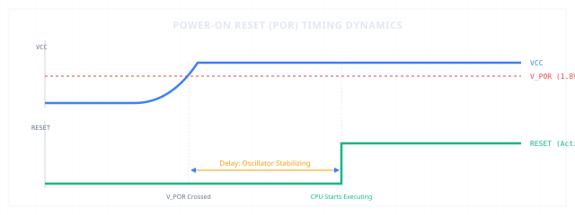
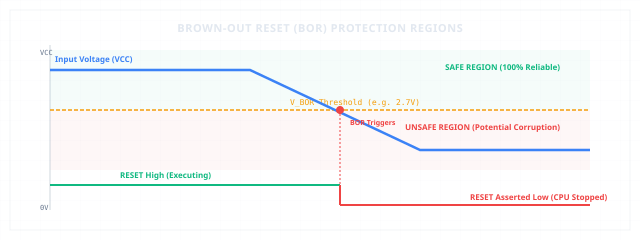
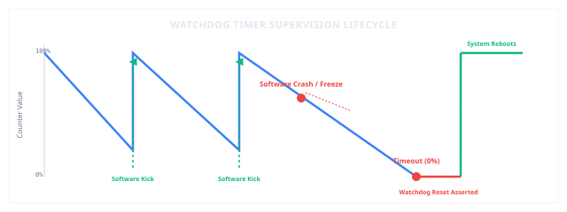

Integration
When Machines Learned to Survive
Why embedded systems stopped assuming the world was perfect.
ReliabilityPORBORWatchdogFunctional Safety
1. The Perfect World
Every layer we have built so far — from silicon transistors and CPU instruction sets, to communication buses and direct memory transfers — has quietly relied on a dangerous assumption: everything works.
We assumed that power rails are perfectly flat lines, that crystal oscillators deliver a clean, unwavering heartbeat, and that software is entirely bug-free. In the clean laboratory of our minds, the machine is a pure logical construct. But when an embedded device crosses from the laboratory into the real world, it meets a hostile, chaotic physical environment. To build machines that survive, we must stop assuming the world is perfect.

Ideal Laboratory Power vs. Unstable Real-World Voltage Rails
2. Power Is Never Perfect
In the real world, voltage rails do not instantly snap from 0V to a stable 3.3V. Consider these everyday realities:
* A battery-powered sensor charges slowly as a capacitor buffers the incoming current.
* An industrial motor starter pulls massive current, causing neighboring supply lines to dip.
* A car ignition system sucks power, dragging the 12V battery line down to 6V during engine crank.
* A wall adapter is plugged into an unstable, noisy mains outlet.
Power-On Reset (POR)
When voltage rises slowly, the silicon inside the microcontroller is in an undefined state. Transistors are partially turned on, logic gates are operating at incorrect switching thresholds, and internal registers hold random noise. If the CPU attempts to fetch and execute instructions immediately, it will read garbage from memory, branch to invalid addresses, and crash. To prevent this, microcontrollers utilize Power-On Reset (POR). The POR circuit is a simple, dedicated hardware monitor that holds the CPU in a hard reset state until the supply voltage rises past a safe threshold, delaying execution until the system's power is stable and clean.

Power-On Reset Timing and Startup Delay
3. The Dangerous Middle
Power failures are rarely instantaneous. When a battery drains or a power plug is pulled, the voltage decays slowly over milliseconds. This decay creates a highly dangerous state: the brown-out.
Brown-Out Reset (BOR)
As voltage sinks below the nominal operating limit but remains above zero, the CPU core continues to run. However, the internal SRAM cells begin to lose charge, the flash memory decoder fails to read bits reliably, and the arithmetic units compute incorrect math. The processor begins executing corrupted instructions. It might accidentally write garbage to safety-critical configuration sectors, trigger actuators incorrectly, or clear system memory. A partially functioning system is often far more dangerous than one that stops completely. To prevent this, a Brown-Out Reset (BOR) monitor continuously measures VCC against a fixed threshold. If the voltage drops below this safety line, the BOR hardware immediately halts the CPU, forcing it into a safe reset state before it can corrupt its own state.

Brown-Out Reset Voltage Threshold Protection Regions
4. When Software Stops Thinking
Even if power is perfect, software is not. Despite months of testing, real-world edge cases eventually trigger bugs:
* An unexpected sensor value causes a division-by-zero, creating an infinite loop.
* Two independent interrupt routines block each other, causing a deadlock.
* A stack overflow corrupts the return address of a function, sending the CPU to an empty memory region.
The Watchdog Timer (WDT)
In these states, the processor is powered and the clock is ticking, but nothing useful is happening. The system is frozen. To recover, we need an independent observer: the Watchdog Timer. A watchdog is a hardware timer that runs completely separate from the main CPU. As the main software executes its control loop, it must periodically 'kick' or 'feed' the watchdog, resetting its counter. If the software crashes or hangs, the CPU fails to feed the watchdog. The counter counts down to zero (timeout) and triggers a hard hardware reset, rebooting the machine and restoring safe operation.

Watchdog Timer Supervision and Recovery Cycle
5. When Time Itself Breaks
All digital logic relies on a steady clock signal to coordinate instruction execution and bus transfers. But what happens if the clock itself fails? An external crystal oscillator can stop vibrating due to physical vibration, thermal stress, or moisture on the PCB pins. An internal PLL (Phase-Locked Loop) can lose lock, causing the clock speed to drift wildly.
Clock Security System (CSS)
If the clock stops, the CPU freezes, interrupts cease to trigger, and watchdogs based on the same clock become useless. Modern microcontrollers solve this with a Clock Security System (CSS). The CSS acts as an independent heartbeat monitor. It continuously measures the external clock against a secondary, low-frequency internal RC oscillator. If the external heartbeat disappears, the CSS hardware automatically switches the system clock to the internal RC source and triggers a high-priority interrupt, allowing the system to log the fault and shut down actuators safely.
6. Reliability Is Invisible
The paradox of reliability engineering is that its greatest successes are completely invisible. Users expect that automotive engines start in freezing weather, medical ventilators never freeze, and factory controllers recover instantly from grid dips. When a system is engineered correctly, failures are handled silently by the hardware monitors. The CPU is reset, variables are reinitialized, and safe states are restored in milliseconds. The user never knows that a catastrophic failure was averted. In embedded systems, the absence of visible problems is the ultimate proof of design excellence.
7. Real Embedded Examples
We can see these safety monitors at work in critical applications all around us:
* Automotive ECUs: An ECU relies on a strict combination of POR, BOR, and watchdogs. If the car starter motor drags the battery rail down, the BOR holds the system in reset until the voltage stabilizes, preventing random fuel injector firing.
* Medical Devices: Ventilators and cardiac monitors utilize independent windowed watchdogs that require software to kick them within a tight time window. If software runs too fast (suggesting a corrupted clock) or too slow (suggesting a lockup), the system reboots and sounds an alarm.
* Drone Flight Controllers: A drone uses clock security and watchdogs. If the high-vibration environment causes the external crystal to fail, the flight controller instantly falls back to an internal RC oscillator to maintain stable flight control.
* Industrial Controllers (PLCs): A PLC monitors supply rail noise and temperature. If a brown-out occurs, it writes crucial state metrics to non-volatile RAM and forces all output lines low, bringing heavy machinery to a safe, controlled stop.
The Architecture of Order
A reliable system can survive in a hostile physical world.
But modern embedded products rarely perform only one task in isolation.
A vehicle simultaneously manages engine timing, CAN bus communications, diagnostics, dashboard displays, and safety telemetry. A medical monitor continuously samples sensors while updating screens, storing logs, and communicating over networks.
One processor core. Many competing responsibilities. Reliability alone was no longer enough; the processor faced the challenge of organizing many independent tasks without chaos.
That question eventually led to the development of Operating Systems.
A system that cannot protect itself from reality is not an architecture; it is a temporary state of success.
Current Exploration
When Machines Learned to Survive